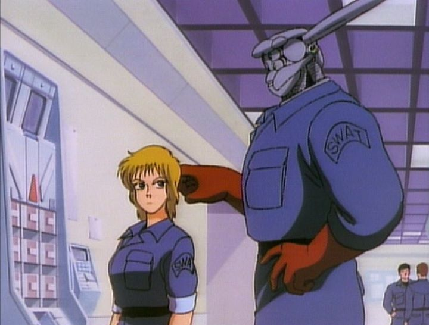

This is a review of the anime film "Appleseed." No, not the 2004 CGI film that has been re-released several times over: that's a fine, but unexceptional, movie. Further, any subsequent adaptations would also use a similar CGI style, such that the franchise has become synonymous with 3D animation. THIS review is about the original 1988 OVA film, animated with pure, low-budget 2D cels... it's not particularly good, but it's been unavailable in English for so long that it ought to be worth the curiosity for anime historians. "Appleseed" is one of the classic Japanese cyberpunk police dramas, alongside "Ghost in the Shell" and "Patlabor." Set in some unspecified future, robots are commonplace in a metropolis called Olympus. The lead duo are Deunan, a hot-headed blonde, and Briareos, a human-cyborg with a metal head. Both are SWAT members, and in this story, when a terrorist plot is resolved and one manages to get away, the two track down the man before a new threat, led by a double-crossing copper, gets fullfilled.The story is a classic hard-boiled police/detective thriller, with a surprising amount of humor thrown in. Despite the sci-fi setting, robots and technology aren't put to great use, other than the odd cool action scene or neat visual in the frame. In this way, the film has a lot more in common with "Patlabor" than "Ghost in the Shell," even though "Appleseed" has the same author as "Ghost": Masamune Shirow. Both the "Appleseed" manga and this film were made long before "Ghost," which perhaps explains the lack of polish underneath the core elements.Frankly, the story was lacking, despite having the entertainment value of a typical 1980's American cop film/procedural, with a concise and self-contained mission. One that's generic and not worth paying attention to unless you're a huge fan of the genre. Also a missed opportunity, considering the author's proven ability in later works, and even the storylines that appear in future "Appleseed" adaptations: we barely question the world of a technology utopia and the compromises made with that in this story.  The production values were also limited, resulting in flat art and animation that ranges from poor to acceptable. I'm sure both budget and age had to do with the animation quality: it's better than I thought it would be, all things considered, but still horrible.The main reason to bother watching this 1988 film is the fun banter and relationship between Deunan and Briareos, enhanced with the old English dub: it's bad and throws in a lot of cursing, making it both intentionally and unintentionally funny, the sort of thing that would be fun to watch with a group of fans or a club (by comparison, the Japanese dub may be better, but also a lot more boring). I also appreciated the soundtrack: it's classic 80's electric-club style, and it put a stupid grin on my face.A lot of bizarre cop-dramas from the 80's and 90's, the era of OVAs, can be found in anime. Some of it is serious, some funny, some meant to cater with sex and violence, some with cheesy excitement. There's a modern fanbase that loves revisiting these old relics. With 1988's "Appleseed," we have a fun diversion in that space, that could be watched by most audiences despite the swearing and odd bullet wound. I don't think hardcore fans of the franchise will appreciate the lack of seriousness and world-building, but even they will be curious about the original film.
- "Ani" More reviews can be found at : https://2danicritic.github.io/ Previous review: review_Angel_Beats Next review: review_April_and_the_Extraordinary_World